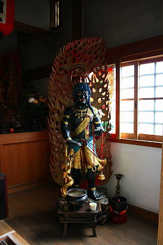
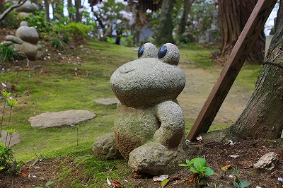

如意輪寺/福岡県
世の中には「○○寺」と呼ばれるお寺が多々ある。
曰く、だるまがたくさんあるだるま寺、貝で覆われた貝寺、地獄だらけの地獄寺とかチンチンだらけのチン寺とか。
挙句の果ては瓶で覆われた瓶寺まで。
これらの寺はテーマを一本化し、そのジャンルに特化することにより知名度を高めていこうという戦略を練っているのだ。
なのでこの「○○寺」というお寺は往々にして客寄せが上手いところが多い…ような気がする。
----------------------------(ここでＣＭ）---------------------------
私も数多くのワンテーマ寺院を見てきたので、その辺のアイデアは色々とあります。
もし一発当てたろう、と目論んでいる御住職がいらっしゃいましたら諸々相談に乗りまっせ。
凄い寺、造っちゃいましょうや。ヘッヘッヘ…
--------------------------（ＣＭソングです）-------------------------
ち〜ん ち〜ん ちんでらだいど〜じょ〜〜 チーン（←鐘の音ね）
-----------------------------------------------------------------
…で、福岡県にある如意輪寺である。
ここはカエルの寺として有名だ。

駐車場には大きな不動明王の石像が立っている。この時点ではカエル要素はなし。
しかし駐車場から山門に通ずる狭い通路（参道）にはチョット歩くのに邪魔じゃねえか、という程カエルの石像が並んでいるのだ。
カエルタワーに僧形のカエル、索を持ったカエル…
そしてその合間合間には様々なメッセージや説明が書かれている。
メッセージの多くはカエルネタの駄洒落が満載。
このページ内のところどころにも境内にあったカエルネタを埋め込んでみましたので雰囲気を味わってくださいな。
まずは鉄板ネタ 「無事かえる」
かなり前のめりなやりすぎ感がにじみ出ているが、こんなのは序の口だと思い知らされるのはあと数10メートル歩を進めた後だった。
狭い道からやや広い場所に出る。
そこにはカエルの石像がずらりと並んでいる。
ほとんど球形のカエルはどちらかというとバボちゃんみたいだぞ。
丸いカエルには思いっきりマジックで願い事が書き込まれまくり。
ビジュアル的にはあまり美しくないが、この混沌とした雰囲気にはむしろマッチしているような気がする。
見れば願い事のほとんどが若い衆たちのもの。
ということはわざわざこの寺を目指してやって来る、ということ。
凄くないすか？
だってここってド田舎というほどではないが人口密度低そうな郊外だし、それこそ京都の修学旅行生が押し寄せる風の寺でもない。
…ひとえにカエルパワー、というかワンテーマ寺院の強みだと思う。
「初心にかえる」

ちなみに口の中の玉は動きます。んで、そこにも願い事たっぷり。
「若がえる」
で、やっと山門が見えてきた。
そう。ココまでの出来事は駐車場と山門の間にあるチョットした空き地での出来事だったのだよ。
この先の濃ゆい展開が容易に想像できますね。
山門を潜り階段をのぼると御想像通りありとあらゆるカエルの石像がひしめいている。
「良くかんがえる」
そんな中で異彩を放っていた不動サマの石像。

四角い石柱のフォルムを残したシンプルな石像で、両手や目鼻なども最低限の筋彫りだけの不動サマ。
手抜きといえば手抜きだがだが表面をビシャン叩きで仕上げた質の高い石像で印象的だった。
「みちがえる」
さらに階段をのぼると水掛不動のお堂が見えてくる。
しかし最も目立つのはカエルの胎内潜り。
有難いんだか有難くないんだかよくわからないけど、ひとついえるのは御影石をこの大きさでくりぬくのって結構大変なんだよね。
内部は磨いてあるので意外とスルッと通れる。
「ふりかえる」
隣にはだきつき観世音菩薩なる観音サマが。
住職発案によるハグできる観音サマ。
観音サマに抱きついて悩みを委ねてみようという画期的な試み。
抱きついただけで悩みがすべて解決できるの？という疑問は宗教の根源を左右することになりかねない重大な命題なので別の機会に論じたいと思うが、このようなアクティブな参拝方法にチャレンジする姿勢は評価したい。
結果、これで幸運が舞い込んだり悩みが解決したりするきっかけになれば良いわけですから。
ダメだったら他の参拝方法を考えるまでです。
境内の片隅に佇むカエル七福神。
何でカエルで七福神？と考えてはいけないのだ。
とりあえず作ってみる、んでそれで救われる人がいればラッキー、じゃん。
こちらはお願い石。
赤い玉石の周りに積まれた白い石に願い事が書き込まれている。
庭には様々なカエルの石像が置かれている。もちろんカエル脇には駄洒落も標準装備。
「気持ちを新たにかえる」
カエル以外の方もちらほら。なんかひこにゃんぽいすね。
ちなみにこの寺は行基が開いたと伝えられる古刹であり、真言系なので立派な不動サマもたくさんいらしゃいます。

で、本堂。
桜の花が咲き誇っていた。
本堂の中では住職がご婦人のグループに法話をしていた。
ココの寺は今やカエル寺としてテレビや雑誌に採り上げられているらしく、こうした参拝客が結構訪れているそうな。
かくいう私も、超一流誌ワンダーJAPAN１２号で掲載したわけですが…
そしてこのかえる寺の真骨頂、本堂脇にあるかえる部屋へ…
足を踏み入れてビックリ。
３部屋にわたってありとあらゆるカエルグッズがひしめいているのだ。
大半はぬいぐるみや玩具だ。
これを集めたという住職の執念にはただならぬものを感じた。
いっちょ客集めに適当にカエルグッズ集めてカエル寺をでっち上げてやろうか、というノリだと思っていたが、このコレクションを見る限りどうやら私のとんでもない思い違いであった。
と、ここで説法を終えた住職がやってきたのでお話を伺う。
ここのカエルは最初は自分ひとりで集めていたが、最近は有名になってきたので色々な人が寄贈してくれるようになったとか。
例えば↓このカエル行灯はマニアの方がわざわざ製作してくれたそうな。
コレクションの一個一個、または話の端々からカエル愛があふれている。
芯から熱意にあふれてないとここまで勢いのあるお寺には成れない、ということを痛感した。
「初心にかえる」

境内の西側の大通りに面している部分は御影石の塀がある。
その長い塀には人の一生をかえるで表現したレリーフが彫られていて一大絵巻となっている。
題して、人生かえる。
誕生からはじまり七五三、入学、受験、成人、結婚…と勢いのある前半戦
一方老後を主に取り扱った後半戦。そして長生きの末、龍に乗ってあの世へ旅立つ。
何ともユーモラスなレリーフだが、ちょっとホロリと来るよ。
想像以上に見ごたえのある超力作であった。
…と、まあ、こんな感じでかえる寺参りは終了。お疲れさまでした。
さて、カエル主義に貫かれたこのお寺の意義などを問うてみようとしたのだが、この圧倒的な量の前にはどんな言葉をもってしても何の意味もなさないように思えた。
カエル愛、それこそが全てなのだろう。
「世界を平和にかえる」
情報提供はUSHISUKEさんです
2009.04.
珍寺大道場 HOME